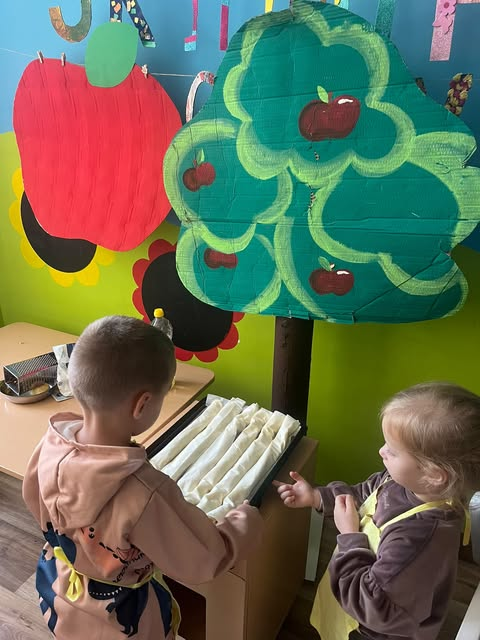
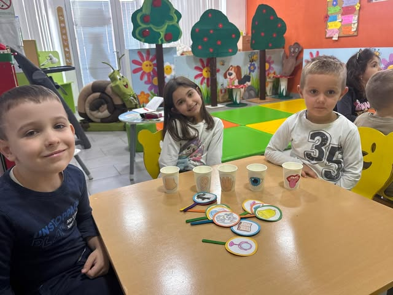
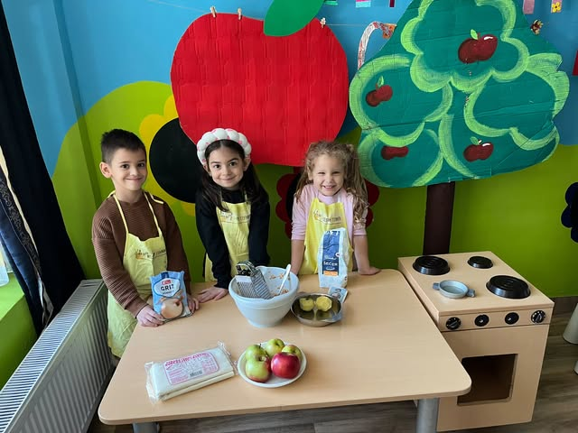
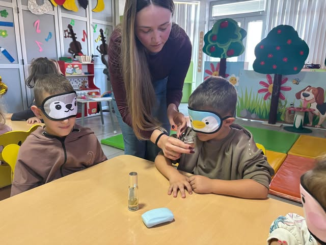

Mali koraci, velike radosti
Topao, siguran i razigran vrtić u Nišu za decu od 1 do 6,5 godina. Čekamo vas na dve lokacije u Naselju 9. maj i na Duvaništu.




Mesto gde se deca osećaju kao kod kuće
PU „Veseli pužić“ je verifikovana predškolska ustanova u Nišu. Naši zidovi su puni jabuka, krošnji i sunca a sobe pune dečjeg smeha.
Verujemo da deca najbolje uče kada se osećaju sigurno i voljeno. Zato svaki dan gradimo polako, korak po korak kao naš pužić. [Kratka priča o osnivanju vrtića i timu.
{{ v.title }}
{{ v.text }}
Dan pun igre i otkrivanja
Program prilagođavamo uzrastu, a svaki dan ima svoj ritam od jutarnjeg zagrljaja do popodnevne igre.
Kako izgleda jedan dan
Pužić putuje kroz dan zajedno sa decom.
-
{{ d.time }}
{{ d.title }}{{ d.text }}
Zavirite u naš prostor
Zidovi sa velikim crvenim jabukama, zelenim krošnjama i suncem — prostor smo osmislili kao slikovnicu u koju deca svakog jutra ulaze.
Upis je u toku
Četiri jednostavna koraka do prvog dana u vrtiću. Pošaljite upit, a mi ćemo vas pozvati da se upoznamo.
-
{{ s.n }}
{{ s.title }}{{ s.text }}
-
{{ s.n }}
{{ s.title }}{{ s.text }}
Potrebna dokumentacija
- {{ d }}
Cena boravka
Cena uključuje četiri obroka, sve aktivnosti i materijal za rad. [Popusti za braću i sestre / subvencije — potvrditi.]
Hvala, upit je poslat!
Javićemo vam se uskoro da dogovorimo upoznavanje i obilazak vrtića.